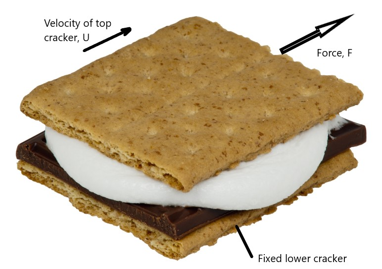

When describing the behavior of moving water in civil engineering infrastructure like pipes and channels there are three primary water properties used used in calculations, all of which vary with water temperature: density (\(\rho\)), dynamic viscosity(\(\mu\)), and kinematic viscosity(\(\nu\)), which are related by Equation (2.1)
\[\begin{equation} \nu=\frac{\mu}{\rho} \tag{2.1} \end{equation}\]
Viscosity is caused by interaction of the fluid molecules as they are subjected to a shearing force. This is often illustrated by a conceptual sketch of two parallel plates, one fixed and one moving at a constant speed, with a fluid in between. Perhaps more intuitively, a smore can be used. 
If the velocity of the marshmallow filling varies linearly, it will be stationary (V=0) at the bottom and moving at the same velocity as the upper cracker at the top (V=U). The the force needed to move the upper cracker can be calculate using Equation (2.2)
\[\begin{equation} F=A{\mu}\frac{dV}{dy} \tag{2.2} \end{equation}\] where y is the distance between the crackers and A is the cross-sectional area of a cracker. Equation (2.2) is often written in terms of shear stress \({\tau}\) as in Equation (2.3)
\[\begin{equation} \frac{F}{A}={\tau}={\mu}\frac{dV}{dy} \tag{2.3} \end{equation}\]
The following demonstrates a use of these relationships.
Example 2.2 Determine force required to slide the top cracker at 1 cm/s with a thickness of marshmallow of 0.5 cm. The cross-sectional area of the crackers is 10 cm\(^2\). The viscosity (dynamic viscosity, as can be discerned by the units) of marshmallow is about 0.1 Pa\(\cdot\)s.
#Assign variables
A <- units::set_units(10, cm^2)
U <- units::set_units(1, cm/s)
y <- units::set_units(0.5, cm)
mu <- units::set_units(0.1, Pa*s)
#Find shear stress
tau <- mu * U / y
tau
#> 0.2 [Pa]
#Since stress is F/A, multiply tau by A to find F, convert to Newtons and pounds
units::set_units(tau*A, N)
#> 2e-04 [N]
units::set_units(tau*A, lbf)
#> 4.496179e-05 [lbf]Water is less viscous than marshmallow, so viscosity has much lower values than in the example. Values for water can be obtained using the hydraulics R package for calculations, using the dens, dvisc, and kvisc. All of the water property functions can accept a list of input temperature values, enabling visualization of a property with varying water temperature, as shown in Figure 2.1.
Ts <- seq(0, 100, 10)
nus <- hydraulics::kvisc(T = Ts, units = 'SI')
xlbl <- expression("Temperature, " (degree*C))
ylbl <- expression("Kinematic viscosity," ~nu~ (m^{2}/s))
par(cex=0.8, mgp = c(2,0.7,0))
plot(Ts, nus, xlab = xlbl, ylab = ylbl, type="l")Figure 2.1: Variation of kinematic viscosity with temperature.